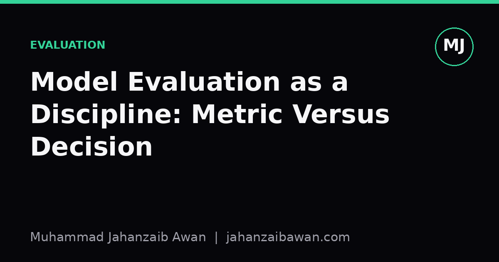

Model Evaluation as a Discipline: Metric Versus Decision
A high accuracy score is not the same as a good decision. Here is why the gap matters and how to close it.

The number on the slide is not the decision
Every machine learning project eventually produces a slide with a number on it: 94% accuracy, an F1 of 0.81, an AUC of 0.92. These numbers feel like conclusions. In practice they are inputs to a conclusion, and treating them as the conclusion itself is one of the most common and consequential mistakes in applied machine learning. A metric describes how a model behaves on a fixed test set under a fixed scoring rule. A decision is what happens when that model is wired into a process with real costs attached to being wrong in each direction.
The distinction matters because a single scalar metric throws away the structure of the problem. Accuracy treats a false positive and a false negative as interchangeable, which is rarely true outside a classroom exercise. AUC describes performance averaged across every possible threshold, most of which you will never use. These are reasonable summaries for comparing models during development, but they are the wrong currency for deciding whether to ship, what threshold to set, or what to tell a stakeholder who has to act on the output.
I think of this as the difference between measurement and judgement. Measurement is what the evaluation pipeline gives you: a number computed against held-out labels. Judgement is what a person or a system does with that number once it is placed inside a real workflow, where the cost of missing a positive case might be entirely different from the cost of a false alarm. Good evaluation practice is the discipline of keeping these two stages separate and explicit, rather than letting a single metric silently stand in for both.
A worked example: the threshold is where the decision actually lives
Suppose a classifier for flagging a rare quality defect achieves an AUC of 0.90 on a held-out set of 10,000 items, of which 200 are true positives, a 2% base rate. That AUC is a genuinely good number. But it says nothing yet about what happens when the model is deployed, because deployment requires choosing a threshold, and the threshold is where cost assumptions enter the picture.
Say we pick a threshold that yields 85% recall and 40% precision. That means we catch 170 of the 200 real defects, which sounds strong. It also means that for every 170 true positives we flag, we raise roughly 255 false alarms, since 40% precision implies 60% of flagged items are not actually defective. If each flagged item triggers a manual inspection costing, say, fifteen minutes of a technician's time, that is over 60 hours of inspection work to catch those 170 defects. Whether that trade is worth it depends entirely on what a missed defect costs downstream, a number that lives nowhere in the AUC and nowhere in the confusion matrix either. It lives in the business, and it has to be supplied by someone who understands the consequences of each error type.
Now shift the threshold to recover 95% recall. Precision might drop to 25%, meaning for every true positive you now generate three false alarms instead of one and a half. The AUC has not changed at all, because AUC is threshold-independent by construction, but the operational reality of running this model has changed substantially. This is the core point: the metric used to select and compare models during development is often the wrong metric to govern the live threshold, because the live threshold needs a cost model, not a ranking statistic.
This is also why I am wary of leaderboards and benchmark tables that report a single number without reporting the operating point. A model with slightly lower AUC but a more favourable precision-recall curve in the region that actually matters for the deployment cost structure can be the better choice, even though it loses on the summary statistic. Evaluation as a discipline means reporting the curve, or at minimum the relevant operating points, rather than collapsing everything into one headline figure.
Where the discipline actually breaks: leakage and shifting ground
None of the threshold reasoning above means anything if the underlying metric was computed on a compromised test set. Leakage is the quiet killer of evaluation discipline, and it rarely looks like an obvious bug. A time series model validated with a random train-test split will often show inflated performance because it has effectively seen fragments of the future folded into training. A model evaluated on data that shares duplicated or near-duplicated records across the split boundary will look better than it is for the same reason. The fix is not exotic: splits should respect whatever grouping or temporal structure exists in the real deployment setting, so that the test set genuinely simulates unseen future cases rather than a reshuffled version of the training distribution.
There is a second, subtler failure mode: the population the model will see in production drifts away from the population it was evaluated on. A fraud model trained and tested on last year's transaction patterns may report excellent precision and recall on that historical slice while degrading steadily as spending habits, products, or adversarial behaviour shift. A single evaluation number, computed once, is a photograph of a moving target. Treating it as a permanent property of the model rather than a time-stamped observation is another way a metric quietly stops representing the decision it is meant to inform.
Honest evaluation practice therefore has to include a few unglamorous habits: documenting exactly how the split was constructed and why it mirrors deployment conditions, reporting performance across the relevant operating points rather than a single threshold, stating the cost assumptions that justify a chosen threshold explicitly, and treating any reported number as provisional until it has been checked against fresh, temporally later data. None of this is difficult in principle. It is simply slower and less photogenic than a single clean percentage on a slide, which is exactly why it gets skipped under deadline pressure.
The practical takeaway
A metric is a property of a model and a test set. A decision is a property of a model, a threshold, and a cost structure, all three of which must be made explicit before anyone should be allowed to act on a number. The discipline of evaluation is not about computing more sophisticated metrics; it is about refusing to let a scalar substitute for the judgement that only a clear-eyed look at costs, thresholds, and data provenance can provide. If you take one habit from this: before quoting a single performance number, ask what threshold it implies, what it costs to be wrong in each direction, and whether the test set actually resembles the world the model will meet next.